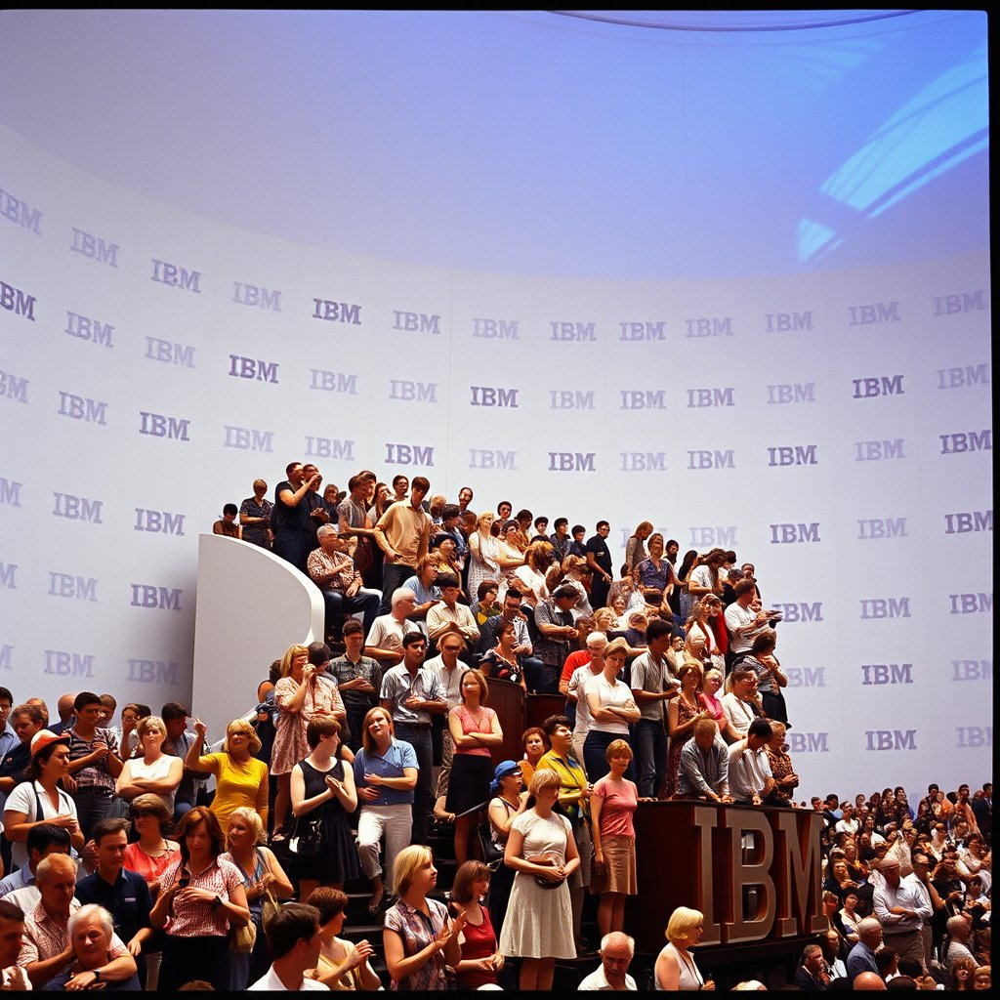
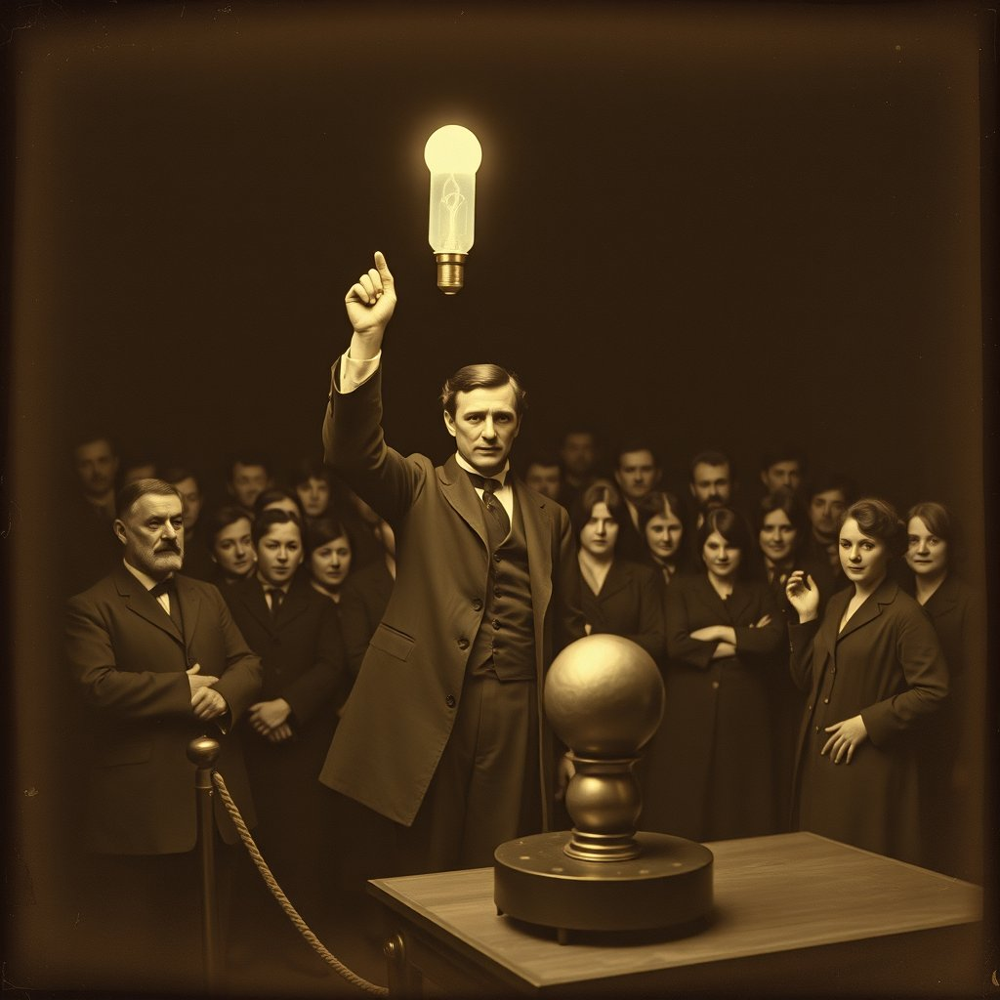

Two generations of each fair. Gen 2 used historically-specific research-driven prompts (IBM People Wall, Elektro robot, Tesla, Nakaya fog, Circle-Vision). Gen 1 used looser era prompts with the original Unisphere-style seeds. Pick your favorite seed image and video for each era.
1964 · New York
World's Fair · "Peace Through Understanding" · Flushing Meadows
Gen 2 — Research-drivenIBM People Wall · hydraulic theater · 97 frames

seed · FLUX.1-schnell
poem image · FLUX
promptKodachrome slide film photograph, 1964. A grandstand of 500 fairgoers in summer clothes rises hydraulically on the IBM People Wall into the interior of a vast white egg-shaped auditorium. The floor is moving upward, and half the crowd is grinning.
prompt1964 New York World's Fair, Unisphere gleaming in the sunlight, futuristic pavilions, optimistic crowds in period clothing, Kodachrome colors, cinematic wide shot
Gen 1 — Alt videoEarlier run · different seed · 33 frames
seed
poem image
prompt1964 World's Fair: seed_image — original workflow run
1939 · New York
World's Fair · "The World of Tomorrow" · Flushing Meadows
Gen 2 — Research-drivenElektro robot · Westinghouse · crowd at glass
seed · FLUX.1-schnell
poem image
promptKodachrome, 1939. A seven-foot golden aluminum humanoid robot stands on a low stage, aluminum lips parted mid-sentence, one hand raised. A Westinghouse technician holds a lit cigarette near the robot's upper lip. Hundreds press six-deep against the glass.
Gen 1 — Loose era promptSkyReels I2V · original run
🖼
seed (not saved)
—
poem image (not generated)
promptSkyReels I2V: 1939 New York World's Fair
1893 · Chicago
World's Columbian Exposition · "The White City" · Jackson Park
Gen 2 — Research-drivenTesla wireless demonstration · Electricity Building

seed · FLUX.1-schnell
poem image
promptSepia daguerreotype aesthetic, 1893 Chicago. Nikola Tesla in a dark frock coat holds a glass vacuum tube aloft — it blazes with cold blue-white phosphorescent light, lit by no wire. Men's faces glow astonished. The copper Egg of Columbus spins silently in its brass induction ring.
Gen 1 — Loose era promptSkyReels I2V · original run · 1.2MB
🖼
seed (not saved)
—
poem image (not generated)
promptSkyReels I2V: 1893 Chicago World's Fair
1970 · Osaka
Expo 70 · "Progress and Harmony for Mankind" · Suita
Gen 2 — Research-drivenNakaya fog sculpture · Pepsi Pavilion · twilight
seed · FLUX.1-schnell
poem image
promptFujiko Nakaya's artificial fog sculpture engulfs the Pepsi geodesic sphere at twilight, Expo 70 Osaka. Visitors in mod coats dissolve waist-deep into luminous white vapor, lit from below by xenon arc lamps. Fujifilm Velvia grain, deep indigo sky.
Gen 1 — Loose era promptSkyReels I2V · original run · 1MB
🖼
seed (not saved)
—
poem image (not generated)
promptSkyReels I2V: 1970 Osaka World Expo
1967 · Montreal
Expo 67 · "Man and His World" · Île Sainte-Hélène
Gen 2 — Research-drivenDisney Circle-Vision 360° · Bell Pavilion · rail grippers
seed · FLUX.1-schnell
poem image
promptInside a cylindrical theatre at Expo 67, hundreds of visitors stand gripping steel guide rails as nine giant curved screens fill with aerial footage of Niagara Falls rushing directly overhead. Women in mod wool coats lean into the rails, faces upturned in genuine vertigo. Bold Kodachrome saturation.
Gen 1 — Loose era promptSkyReels I2V · original run · 808K